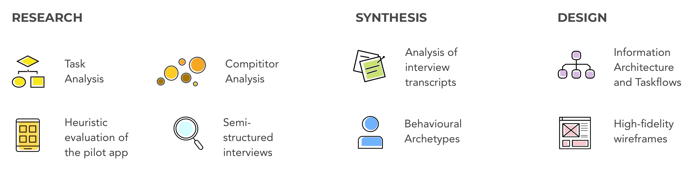
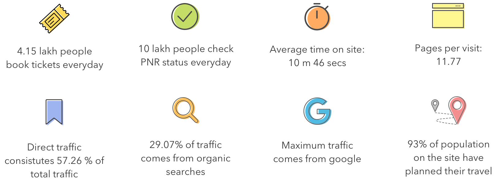
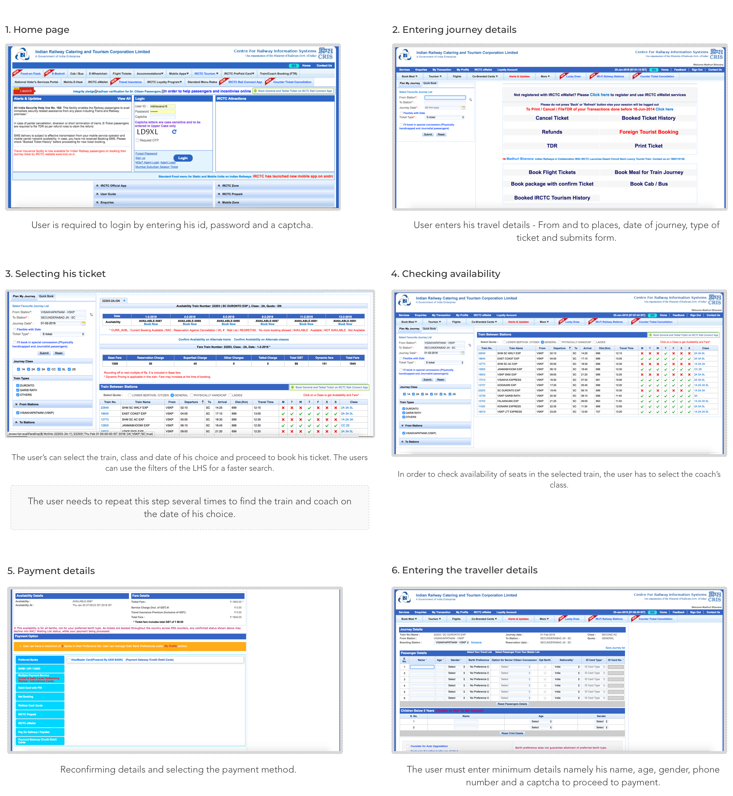
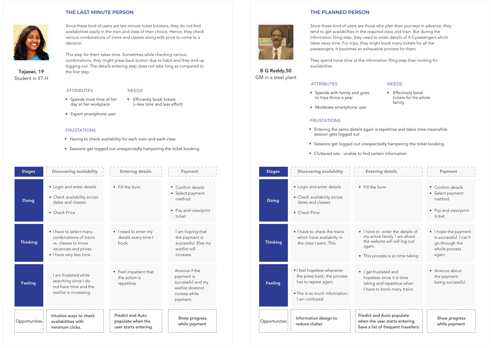
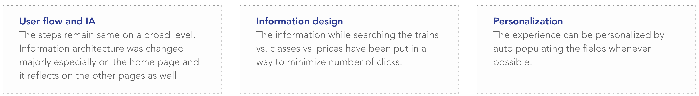

Indian Railways - Improving the usability of the website
I redesigned the ticket booking flow of irctc as a part of the project. The project was a part of the class Usability Engineering which I took during my junior year.

- Instructor: Sharmistha Banerjee
BACKGROUND
Indian Railway Catering and Tourism Corporation (IRCTC), is a subsidiary of the Indian Railways that handles the catering, tourism and online ticketing operations of the Indian railways [ www.irctc.co.in]. Some of its usage statistics are shown below -

TASK ANALYSIS
I broke down the ticket booking flow into parts to understand the system and user requirements at different stages. Further, this activity helped me evaluate the flow and analyze the failure points. The steps in the ticket booking flow are shown below -
The steps in the ticket booking flow
I evaluated the flow against the 10 Neilson Heuristics and made a sheet marking the issues and reccomendations. The issues were centered around lack of consistency, lack of user control and freedom, lack of efficiency and flexibility of use.
Other problems identiifed were -
- Visual: Haphazard eye movement , Usage of many visual elements
- Information and Flow: Huge number of clicks required for any sub-task, Information hierarchy
COMPETITOR ANALYSIS
I performed a task analysis of 4 other popular ticket booking products in India. The biggest and unique strength of the product is shown below -

USER INTERVIEWS
I conducted semi-structured interviews with 5 users of different ages and travel frequencies. The aim of the interviews was to understand the problems different users face while booking tickets and to know the current ways they adopted to overcome these problems. The participants were encouraged to go through the flow again to enable recollection of experiences.
Sample size: 5
Mode: In-person and Telephonic interviews
Duration of interview: 25 mins
The above mentioned verbatims were crucial for forming design decisions.
Analysis of data
The analysis of the transcript data led to the identification of 2 types of users.
BEHAVIORAL ARCHETYPES
From the analysis of the interviews, a major finding was that the behaviour of the users depended on the triggers. The following behavioral archetypes describe the two types of users -

FLOW AND IA
The primary flow of ticket booking is mostly linear. This is to cater the website to older population/moderate level technology users.
Major changes in the existing flow were
WIREFRAMING
High fidelity wireframes were made.
The marvel prototype gives you a detailed description of the flow -
FURTHER SUGGESTIONS
In order to accommodate people with sensory and hearing disabilities, corresponding usability guidelines may be followed.
Form fields must have predictive suggestions and auto populate feature wherever possible.
Hence, personalization, improved information architecture and information design can help improve the experience of the users in many ways.